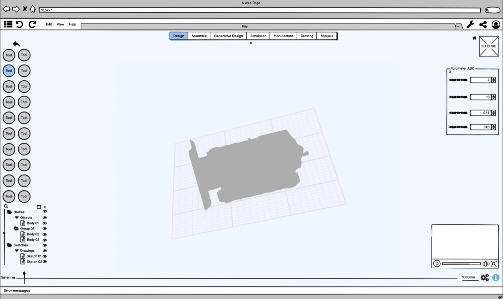
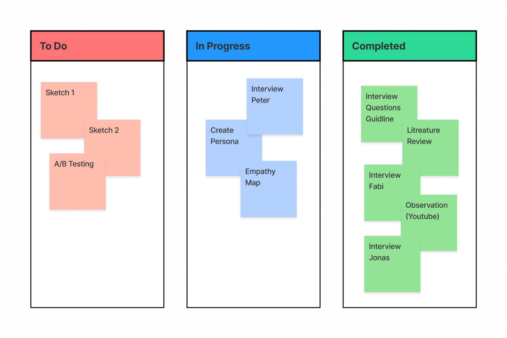
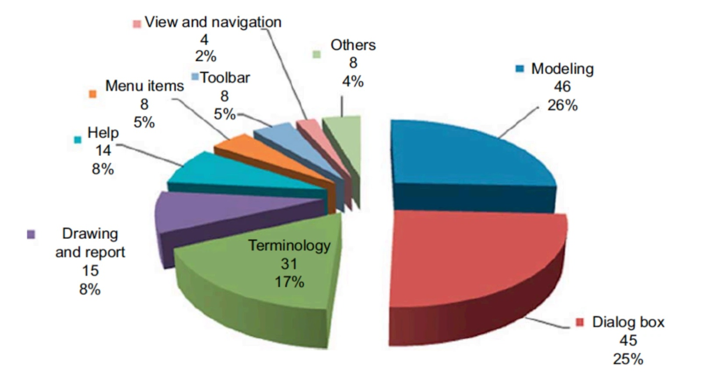
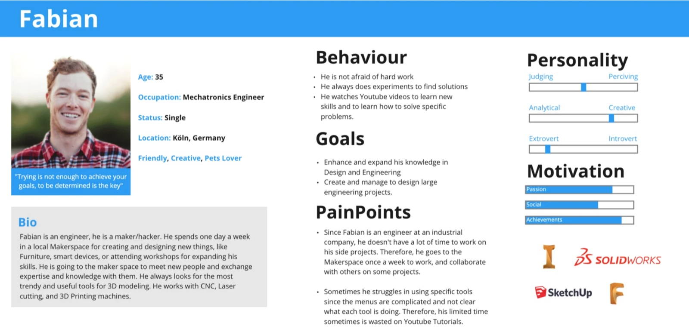
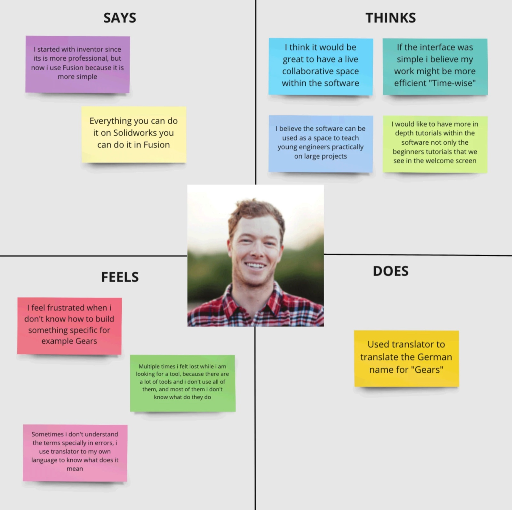
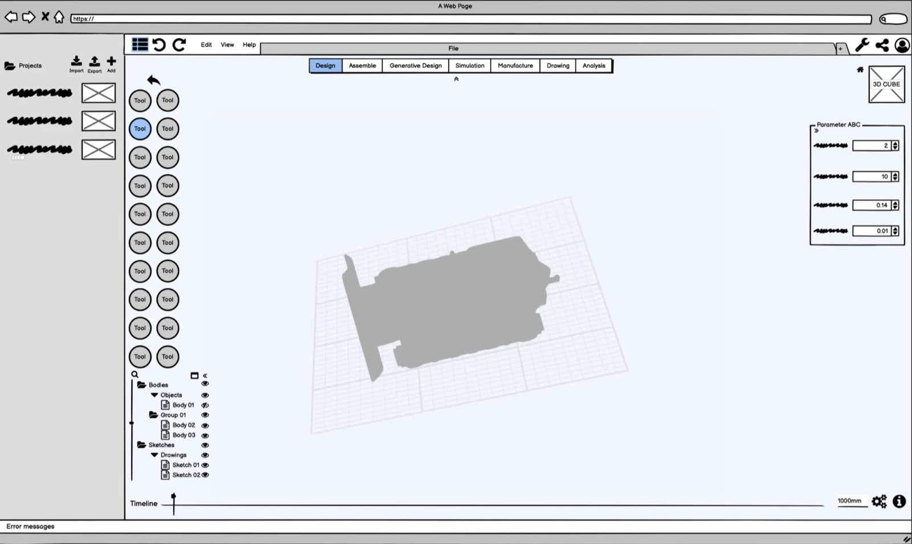

Work / SaaS · CAD / One-week challenge
3D Modeling UI
One week to design a browser-based 3D modeling interface for mechanical and industrial engineers, a professional tool with an expansive viewport, built for users who need advanced functionality, not casual hobbyists. The constraint made the method matter more.

Pro-grade CAD, in a browser, in a week
The brief: craft an interface for a 3D modeling software delivered as Software-as-a-Service via web browsers, empowering users to create intricate 3D elements. I focused not just on meeting the provided specifications but on conceptualizing the design’s structure, detailing the interactions, and making the thought process behind each decision explicit.
Two commitments framed the work: design for users who require advanced functionality rather than casual hobbyists, and guard the software’s capacity for future enhancement: in features and platform compatibility, so the design accommodates evolving user needs and technological advancement.
A week run on Kanban
To monitor progression I ran the project on the Kanban agile methodology, a fluid, adaptable workflow for a compressed timeline. Within the week, the design thinking process still encompassed a full series of interviews, research, user studies, evaluations, and A/B testing: user-centric and data-informed, with iterative improvements and strategic decision-making to the last day.

Five interviews, one literature
Constrained by time, I conducted five user interviews, and engineered around the limitation: a question guide of open-ended questions enabled semi-structured interviews, conducted via video call under pandemic conditions, each recorded with explicit participant consent strictly for research purposes. Ethics aren’t a luxury feature of fast research.
Desk research anchored the interviews in the CAD usability literature: working on three-dimensional layouts through a two-dimensional screen is one of the classic interface problems in engineering tools. Following Lee et al., the top CAD UI issues range across dialog boxes, drawings and reports, modeling, domain terminology, view and navigation, menus and toolbars, and their three families of principles (general system design, 3D-parametric-specific, and user support) later structured my evaluation. Notably, Nielsen Norman Group’s ten heuristics serve simple desktop and mobile software well, but do not stretch to the interface of a sophisticated 3D system.

Meet Fabian
The research converged on one person: Fabian, 35, a mechatronics engineer in Köln who makes at a local hackerspace one day a week. He moves between Inventor, SolidWorks, SketchUp, and Fusion, picks up new skills from YouTube, and loses time hunting through crowded menus for the one tool he needs. His goals, behaviours, pain points, and motivations kept the design honest: built for a capable professional with very little time to waste.


From persona to viewport
The interviews produced an engineer persona and an empathy map split into its four quadrants, a glimpse into who the user is as a whole, keeping the design user-centered rather than feature-centered. The interface that followed is guided by fundamental design principles: an expansive modeling viewport at the center, a consistent tool rail, parameter controls beside the model tree, and terminology that matches the engineer’s domain rather than the developer’s.
The design was then evaluated against the same principles the literature provided, closing the loop between desk research and the finished screens.

One week is not enough time to skip the research. It’s exactly why the research had to be sharper.process reflection